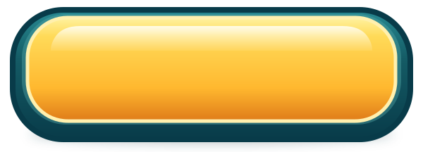
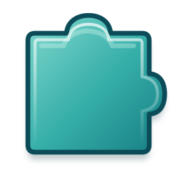
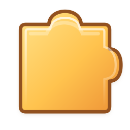
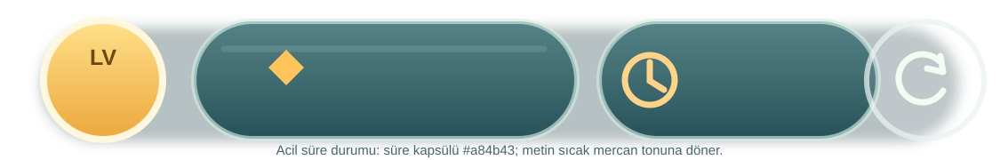
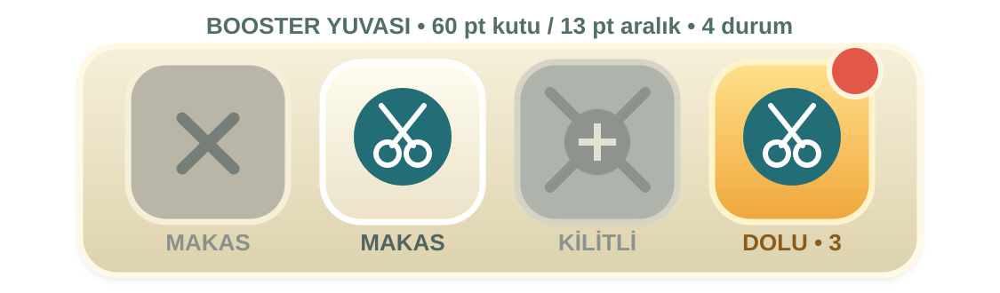
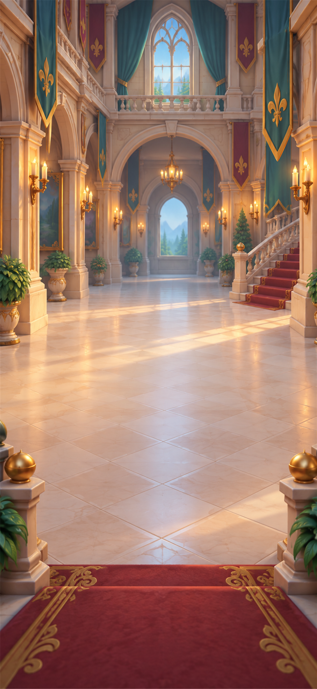
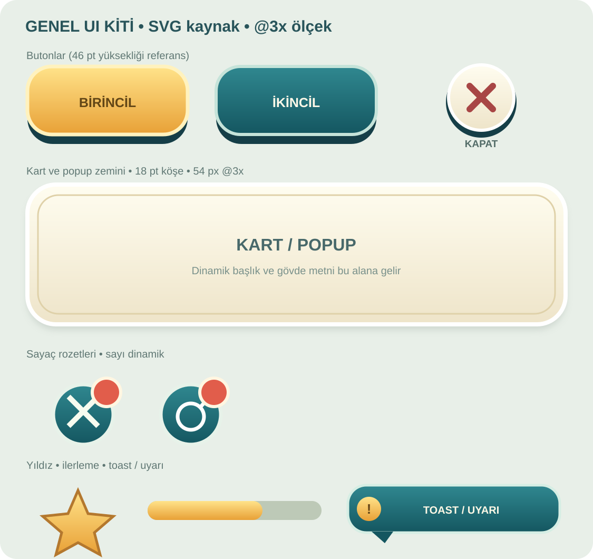

Normal · Basılı · 600×216 px

Dokun · Kaydır · 288×288 px
İki yön ve durum önizlemesi · 81’lik seri üretim onay sonrasında.


Normal HUD · Acil sayaç


1125×2436 px

Zincir halkası · Duvar şeridi

Varlık listesi · HANDOFF
Açık önizleme sayfası